____________________ PILARES DO CLASSICISMO____________________
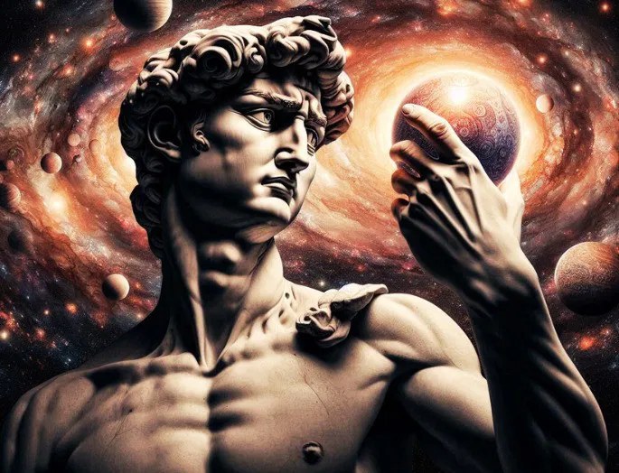
- O homem passa a ser o centro do pensamento, com poder de transformar o mundo e buscar o conhecimento.
- "O homem é a medida de todas as coisas." – Protágoras (muito citado pelos humanistas)
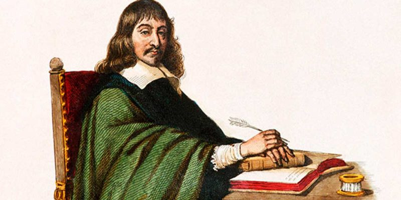
- A razão se torna o filtro principal para julgar o mundo.
- Arte e ciência se aproximam: proporção, simetria e lógica passam a ser valorizadas nas obras artísticas.
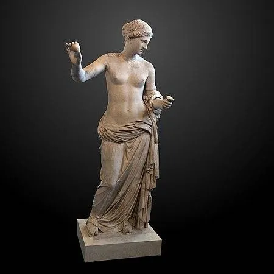
- Inspirado nos gregos e romanos: proporção matemática, equilíbrio, clareza e contenção.
- Nada exagerado ou caótico — a forma importa tanto quanto o conteúdo.
Antropocentrismo
Racionalismo
Ideal de Beleza

- O artista clássico busca criar obras que toquem temas universais, como amor, glória, virtude, heroísmo.
- A ideia é que a obra seja atemporal, válida para qualquer geração.
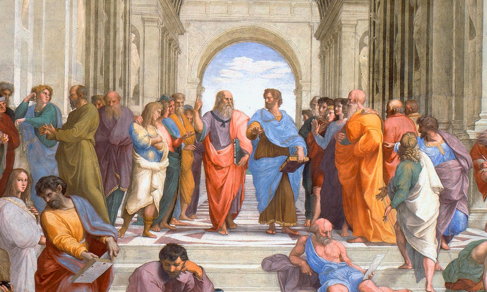
- "Imitatio": imitação consciente dos clássicos antigos.
- "Mimesis": a arte deve imitar a natureza e a realidade, com perfeição e equilíbrio.
 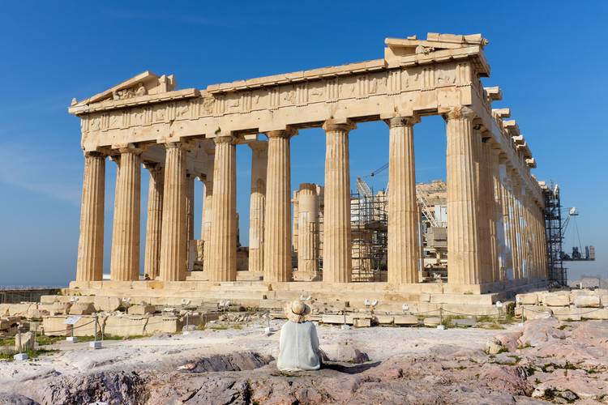
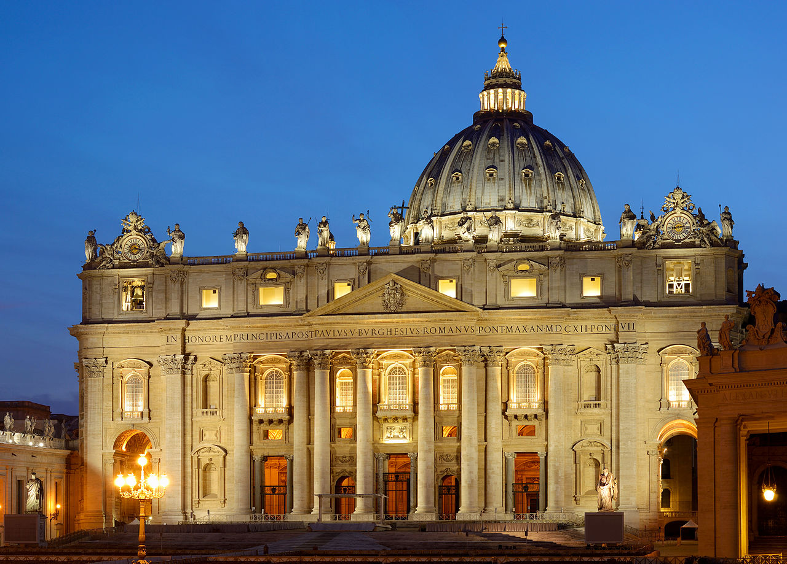
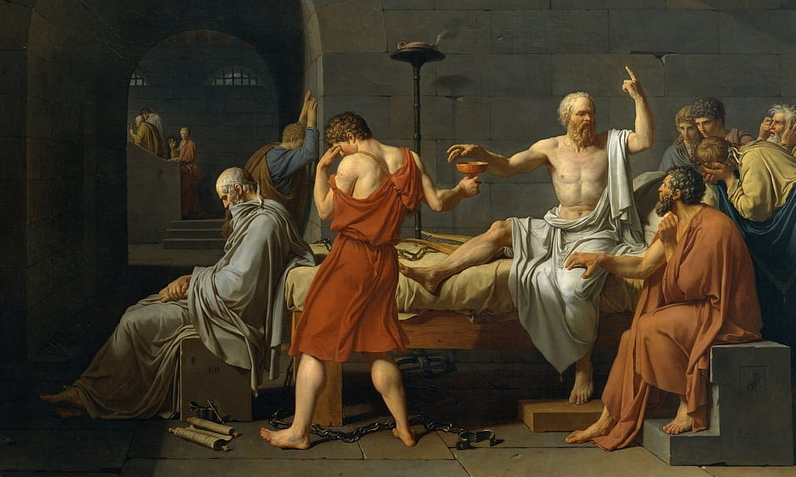
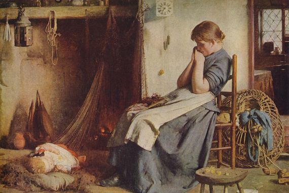
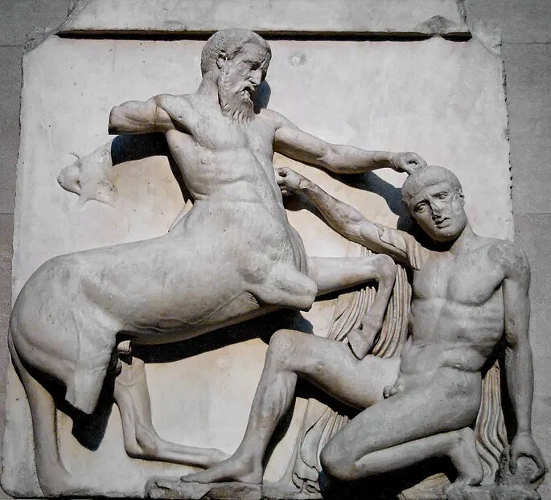
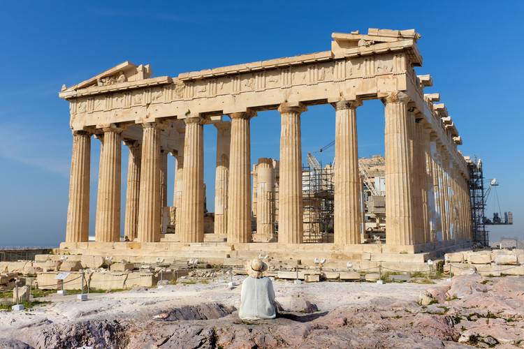
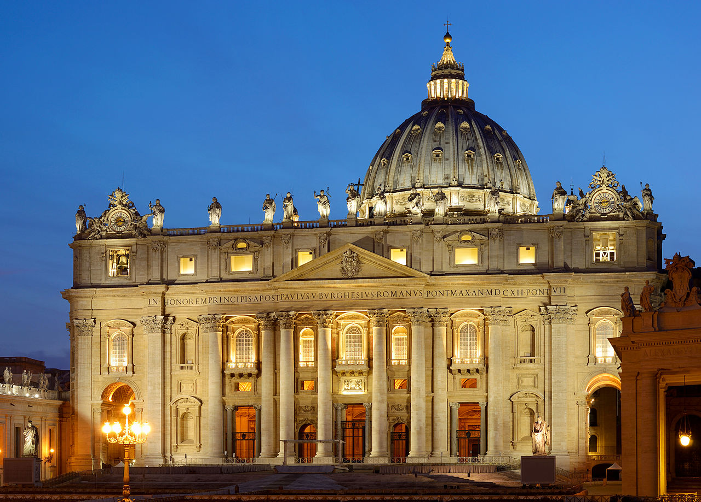
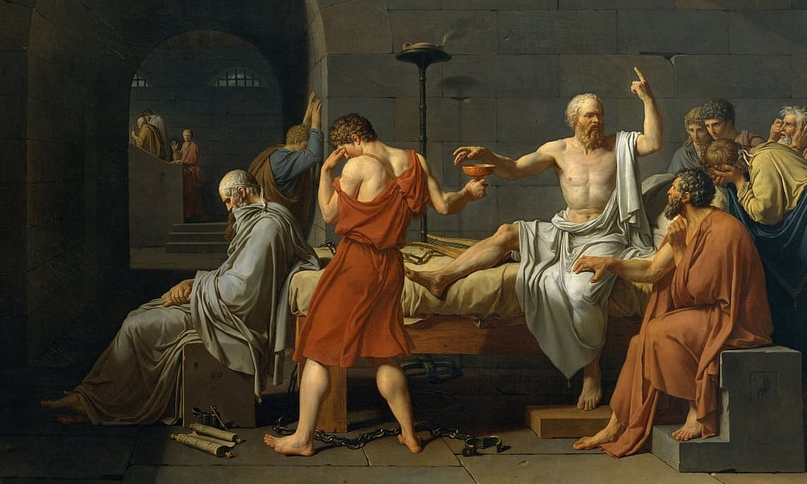
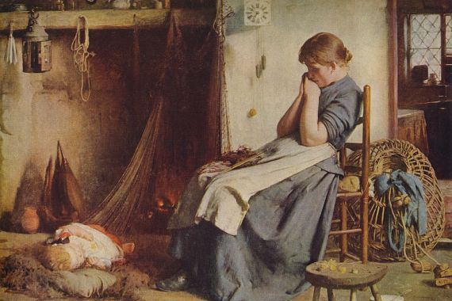
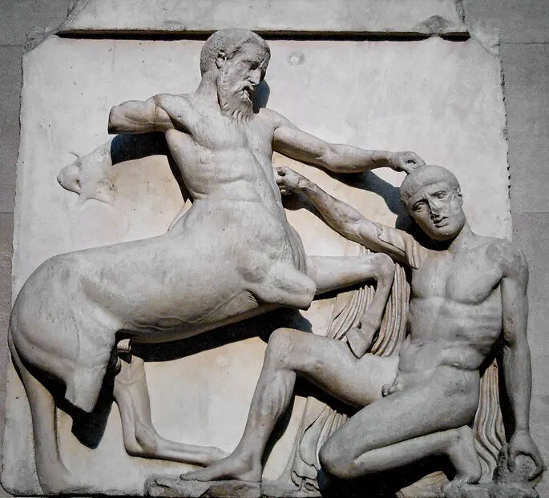